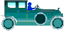

|
 previous / next column
A PHYSICIST WRITES . . .
(February 2004)
A miscellaneous column this month - a selection of motoring puzzles and paradoxes, with explanations where I can think of them:
Why have a significant number of traffic lights been fitted with shutters, so that you can see the green lamp (and sometimes the amber) only when you are right underneath? To me this is a serious distraction, because I worry about whether the lights have failed altogether.
Then recently I realized that shuttered lights are always just beyond another unshuttered set, and that the purpose must be to stop you reacting to the green when the nearer lights are still red. But they still distract me!
On a very wet and busy motorway, why does the visibility to the rear sometimes seem much better than to the front - maybe even deceiving you into thinking that your rear fog-lamp isn't needed, when it very likely is? The answer is probably a combination of factors, including other vehicles' headlights (behind you) being brighter than the rear lamps ahead, while your own headlights are reflecting back at you off the misty spray.
A physics puzzle: how is it that frost and even icy patches can form on the road when the air temperature is still a degree or two above freezing? Answer: when there is no wind, often what happens is that the ground cools by radiating heat up into a clear sky, while the air (being a good insulator against conducted heat) stays warmer.
When there is a dry breeze but the ground is wet, a different effect is possible - water evaporates from the surface of a puddle, but in order to become vapour it may extract so much heat energy from the remaining liquid that the puddle freezes.
And why is black ice black? Actually it's not - it's transparent, and it forms under special conditions which eliminate the tiny air bubbles and other 'defects' that make ordinary ice appear white. Daylight goes straight through black ice, and is absorbed by the road surface beneath. Also, the surface of the ice is microscopically rough, hence it reflects very little light itself. So you meet an invisible skating rink, instead of the safe road that it appears to be!
As you drive along past an oncoming queue of vehicles, is the queue more of a hazard when it is slowly moving or when it is stationary? Answer: the stationary queue is more dangerous, surely, because pedestrians, cyclists, dogs etc may suddenly appear between the vehicles and try to cross in front of you.
And would you agree that an oncoming cyclist is a greater hazard than one travelling in the same direction as you? Almost invariably, it seems to me, a vehicle appears from ahead and moves out to pass the oncoming bicycle, regardless of your approach. With the cyclist on your own side of the road, at least you can decide when it is safe to overtake.
There's a similar unexpected risk with children (not to mention dogs) on the opposite pavement: isn't it more likely that they will cause an oncoming vehicle to swerve out, than that children on the nearside pavement will take you (an advanced driver) by surprise?
Finally, when I encounter a horse and rider on the road, why is this almost never after I have just passed a horse-and-rider sign? It happened to me just once that I can remember, and I was so surprised I nearly reversed back to make sure I hadn't misread the sign.
Peter Soul
previous / next column
|